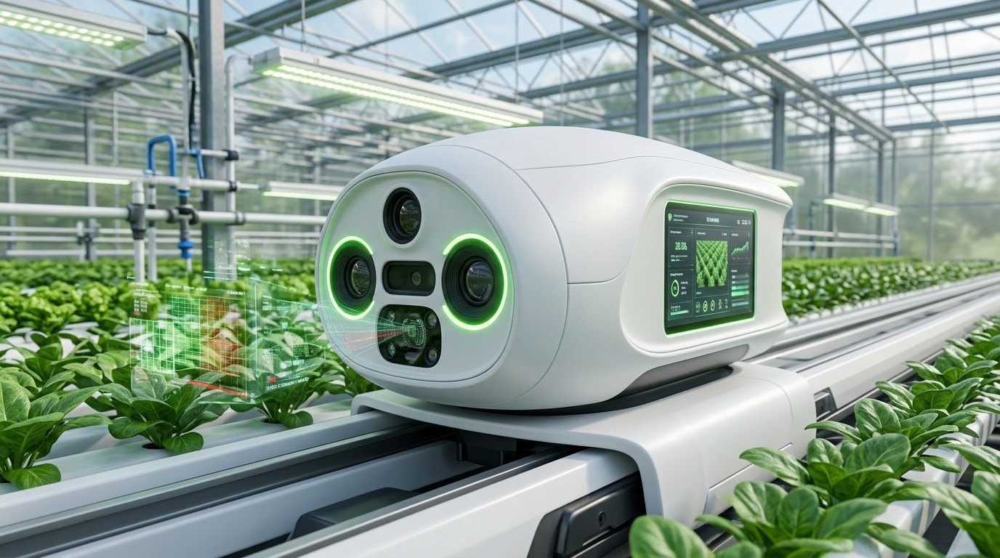

conveyor_belt01 · RAIL SCANNING
레일 주행 자동 촬영
기존 난방관 파이프레일에 카트를 올려 설치비를 줄였습니다. 스케줄에 맞춰 순회하고, 엔코더 값으로 촬영 위치를 정확히 남깁니다.
순회당 촬영 커버리지작물 열 95% 이상
레일 주행 카메라가 토마토 잎을 촬영하고 Edge AI가 질병을 판별합니다. 위험도에 따라 발병 구역에만 방제 장치를 작동시키거나 관리자에게 승인을 요청합니다.

발병이 확인된 구역만 표시하고, 그 구역에만 방제합니다.
잎곰팡이병, 흰가루병, 잿빛곰팡이병 같은 시설 토마토 병해는 처음에 잎의 작은 색 변화로만 나타납니다. 고온다습한 온실에서는 이 신호를 놓치는 순간 인접 구역으로 빠르게 퍼집니다.
병해로 인한 연간 수확량 손실률
1ha 온실을 사람이 눈으로 예찰하는 데 매일 드는 시간
발병 여부와 상관없이 전 구역에 뿌리는 달력 방제. 약제비와 PLS 위반 위험이 커집니다.
숙련도에 따라 판별 편차가 크고, 잎 뒷면과 하위엽은 놓치기 쉽습니다.
전 구역 일괄 살포로 약제비와 노동력이 낭비되고 저항성 병원균이 생길 수 있습니다.
온습도로 "발병 가능성"만 알려줄 뿐, 실제 발병 위치와 병명은 특정하지 못합니다.
사람이 직접 찍어야 해서 상시 감시가 불가능하고, 방제 장치와 연동되지 않습니다.
영양 결핍, 수분 스트레스, 노화엽, 조명 반사도 비슷한 색 변화를 만듭니다. 단순한 색상 임계값 필터로는 오탐률이 30%를 넘습니다. CropSense AI는 반점의 형태, 분포 패턴, 색 그라데이션, 잎 위치를 함께 학습한 딥러닝 모델에 온습도·엽면습윤 시간 같은 환경 데이터를 결합해 판단합니다.
기존 온실의 파이프레일, 방제 배관, 복합환경제어기를 그대로 활용합니다. 사람이 하던 예찰과 방제 판단을 피지컬 AI가 이어받습니다.
스캐닝 카트가 하루 2회 레일을 따라 이동하며 작물 열마다 잎을 촬영합니다.
Edge AI와 서버가 3단계로 분석해 구역별 최종 위험 등급을 산출합니다.
안전 인터락을 확인한 뒤 발병 구역에만 방제하고, 관리자에게 알립니다.
고연색 LED 조명 아래 잎 촬영, 위치 태깅
YOLOv8s → 색 보정 → EfficientNet-B3
같은 병으로 판별된 잎 집계
환경 위험도(LightGBM) 결합 + 안전 인터락
PLC 전자밸브, 환기, 알림톡, 대시보드
판별 신뢰도, 병반 잎 수, 환경 위험도를 함께 보고 4단계로 대응합니다. 결과에는 구역, 병명, 신뢰도, 대표 이미지 3장, 권장 약제가 함께 담깁니다.
신뢰도 0.90 이상, 같은 구역 병반 잎 5장 이상, 환경 위험도 '높음'
신뢰도 0.70~0.90, 또는 병반 잎 2~4장
신뢰도 0.50~0.70, 또는 영양결핍·생리장해 판별
위 조건에 해당하지 않음
인터락 중 하나라도 걸리면 자동 방제를 막고 '경고' 등급으로 내려 관리자 승인을 요청합니다. 현장에는 비상정지 버튼도 있습니다.
네트워크가 끊겨도 카트 위의 Edge AI가 판별과 저장을 계속합니다. 쌓인 데이터는 모델 개선과 인증 대응에 다시 쓰입니다.
기존 난방관 파이프레일에 카트를 올려 설치비를 줄였습니다. 스케줄에 맞춰 순회하고, 엔코더 값으로 촬영 위치를 정확히 남깁니다.
CRI 95 이상 LED 링라이트와 24색 컬러 체커 캘리브레이션으로 시간대·날씨에 따른 자연광 변화를 지우고, 색 변화 자체에 집중합니다.
구역별 발병 현황, 판별 이미지, 방제 이력, 약제 사용량을 한 화면에서 확인하고 웹에서 바로 방제를 승인합니다. 모바일 반응형으로 제공됩니다.
판별·방제·승인 이벤트와 이미지를 3년간 보관합니다. 매월 PDF 방제 일지가 자동 생성되어 GAP 인증과 PLS 농약 사용 기록으로 쓸 수 있습니다.
방제 후 48시간 동안 다음 순회 촬영으로 병반이 늘었는지 추적하고 방제 효과 리포트를 만듭니다.
관리자가 "오진 신고" 버튼으로 정답을 알려주면 재학습 데이터셋에 자동으로 쌓입니다. 모델 버전을 추적하고 필요하면 이전 버전으로 되돌립니다.
산업용 카메라와 PLC 같은 검증된 장비 위에 경량 AI 모델을 올렸습니다. 국내 온실 환경제어기와의 호환성을 우선했습니다.
Sony IMX296 기반 1.6MP. 카트가 움직여도 모션 블러가 적습니다.
TensorRT FP16/INT8 최적화로 카메라 4채널을 실시간 추론합니다.
잎 검출, 9개 클래스 분류, 환경 기반 발병 위험도. 판단 근거를 설명할 수 있습니다.
엽면습윤 시간은 곰팡이성 병해의 핵심 변수입니다. ESP32-S3 노드로 수집합니다.
구역별 24V 전자밸브를 Modbus TCP로 제어합니다. 카트 모터는 STM32F4가 담당합니다.
FastAPI, TimescaleDB, MQTT. LTE 백업 회선과 SMS로 연결이 끊기지 않게 합니다.
1ha 토마토 온실 기준 목표치입니다.
육안 예찰보다 평균 3일 이상 먼저 감지합니다.
순회 예찰 시간을 70% 줄입니다.
발병 구역에만 방제해 약제비와 PLS 위험을 줄입니다.
손실률을 절반으로 낮추는 것을 목표로 합니다.
| 병해별 재현율 (놓치는 병해 최소화) | ≥ 0.90 |
|---|---|
| 질병 분류 Macro F1 (9개 클래스) | ≥ 0.88 |
| 잎 검출 mAP@0.5 | ≥ 0.85 |
| 질병 ↔ 영양결핍 혼동률 | ≤ 5% |
| 자동 방제 오작동률 | ≤ 2% |
| Edge 추론 지연 (이미지 1장) | ≤ 150ms |
|---|---|
| 발병 판별 → 알림 수신 | ≤ 5분 |
| 발병 판별 → 방제 작동 (긴급) | ≤ 10분 |
| 시스템 가동률 (월) | ≥ 99% |
| 관리자 승인 응답 시간 (중앙값) | ≤ 30분 |
1ha 토마토 온실, 연매출 2억 4천만 원, 장비 내용연수 5년을 가정한 기준 시나리오입니다.
회수기간이 장비 내용연수(60개월)보다 짧고, 5년 누적 약 3,478만 원의 순이익이 예상됩니다.
월 운영비 75만 원(전력, 클라우드, 통신, 유지보수, 재학습)을 뺀 금액이 월 순 절감액입니다.
v1은 시설 토마토와 기존 고정 배관 방제에 집중합니다. 성능이 검증되면 다음 단계로 확장합니다.
토마토 외 시설 작물로 판별 모델을 확장합니다.
총채벌레, 가루이 등 해충을 직접 인식하는 별도 모델을 개발합니다.
RGB 기반 성능을 검증한 뒤 분광 센서로 고도화합니다.
분기 1회 수동 재학습을 클라우드 자동 재학습으로 전환합니다.
약 0.3ha 규모의 1개 동에서 PoC를 진행해 병해별 재현율 0.90과 자동 방제 오작동률 2% 이하를 확인한 뒤 전체 시설로 넓히는 단계적 도입을 권합니다. 지자체 스마트팜 보급 사업과 함께하면 회수기간을 더 줄일 수 있습니다.